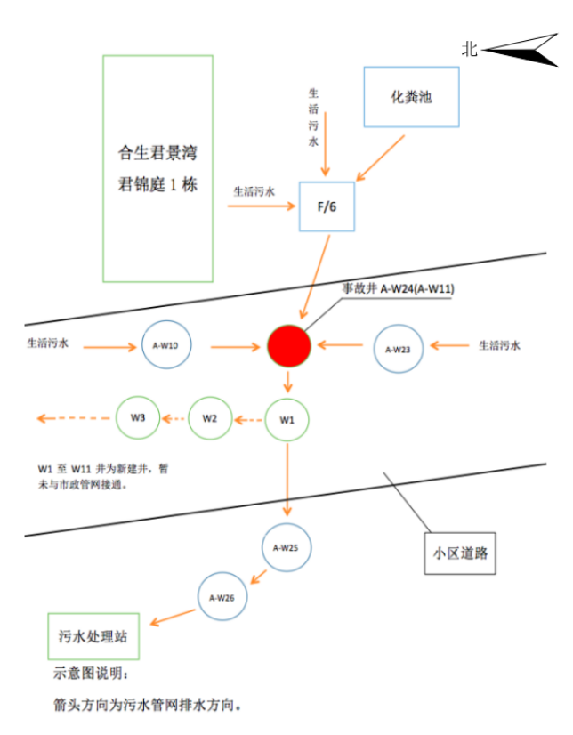

佛山南海区某小区污水管网改造工程“11·8”较大中毒溺水事故调查报告
2019年11月8日15时50分许，佛山南海区里水镇盐南公路君景湾1期小区的污水改造工程施工过程中，发生一起中毒溺水事故，造成3名施工人员死亡（以下简称“11·8”较大事故）。
事故发生后，省、市领导同志对伤员救治和善后处置工作作出批示，市、区、镇政府和相关部门负责同志赶赴现场组织开展应急救援工作。根据《中华人民共和国安全生产法》和《生产安全事故报告和调查处理条例》（国务院令第493号）等有关法律法规要求，佛山市人民政府成立由市纪委监委、应急管理局、公安局、住房城乡建设局、生态环境局、水利局、司法局，市总工会和南海区人民政府负责同志组成的事故调查组，对南海区“11·8”较大事故开展调查。调查组委托有资质的技术服务机构协助调查。
事故调查组坚持“四不放过”和“科学严谨、依法依规、实事求是、注重实效”的原则，通过现场勘查、调查取证、人员问询、检测鉴定、专家论证、查阅资料，查明事故发生的原因、经过、人员伤亡和直接经济损失等情况，认定了事故的性质和责任，提出了对有关责任人员和责任单位的处理建议。同时，针对事故原因和暴露出的问题，总结了事故的主要教训，提出了事故防范措施建议。
一、事故基本情况
（一）工程项目概况
2018年5月23日，佛山市南海区人民政府办公室根据上级有关要求，制定印发了《佛山市南海区人民政府办公室关于印发南海区楼盘、集贸市场、餐饮、学校截污情况排查和规范整治专项行动工作方案的通知》（南府办函〔2018〕182号），要求各镇街和区有关单位对全区楼盘、集贸市场、餐饮、学校（以下简称“四大场所”）生活污水排放情况开展全面排查，逐一登记造册、建立清单，并按时间节点完成四大场所污水接入市政污水管网的整治工作。广东合生泓景房地产有限公司作为佛山市南海区里水镇合生君景湾小区开发商，按要求开展君景湾小区污水管网改造建设工程。
广东合生泓景房有限公司经公司内部立项、公开招标选定广东侨邑建设工程有限公司为施工单位，并于2019年4月10日与其签订《南海君景湾小区污水改造市政工程施工承包合同》，合同总价款（含税）1199259.25元。
（二）有关单位情况
1.建设单位基本情况
广东合生泓景房地产有限公司（以下简称“合生泓景公司”），统一社会信用代码：914406057879166529，类型：有限责任公司（台港澳法人独资），住所：广东省佛山市南海区里水镇南盐公路（合生君景湾），法定代表人：李菁，总经理：相戬军（佛山地区总经理，兼任南海君景湾小区包括该小区污水管网改造工程的项目总经理），注册资本：贰亿零贰拾捌万元人民币，成立日期：2006年4月18日，经营范围：房地产投资策划、房地产信息咨询、企业策划及咨询、物业管理；在南海区里水镇南盐公路路段开发、建设合生君景湾项目，出租、销售和管理自建的商住楼宇及配套设施。上述经营范围内依法须经批准的项目，经相关部门批准后方可开展经营活动。登记机关：佛山市南海区市场监督管理局。持有《中华人民共和国房地产开发企业资质证书》，资质等级：三级，证书编号：粤佛房开证字第1300093号，发证机关：佛山市住房和城乡建设管理局，有效期：2018年9月12日至2020年9月12日。
2.施工单位基本情况
广东侨邑建设工程有限公司（以下简称“侨邑公司”），统一社会信用代码：91440600MA4UJ4UR8K，类型：有限责任公司（自然人投资或控股），住所：佛山市南海区大沥镇岭南路75号1106室之一（住所申报），法定代表人：刘洋，注册资本：壹仟零壹万元人民币，成立时间：2015年10月20日，经营范围：市政道路工程建筑；市政设施管理；房屋建筑业；建筑装饰、装修和其他建筑业；水利和水运工程建筑;铁路工程建筑；公路工程建筑；城市轨道交通工程建筑；其他道路、隧道和桥梁工程建筑；建筑物拆除和场地准备活动（不含爆破工程服务）；电气安装；管道和设备安装；工程设计活动；架线和管道工程建筑；环保工程施工；园林绿化工程施工；林业有害生物防治活动；电力工程施工；农作物病虫害防治活动；贸易代理；其他未列明建筑业【施工劳务作业（不含劳务派遣）】。上述经营范围内依法须经批准的项目，经相关部门批准后方可开展经营活动。登记机关：佛山市南海区市场监督管理局。持有《建筑业企业资质证书》，证书编号：D344183362，有效期：至2022年12月5日，资质类别及等级：建筑工程施工总承包叁级、市政公用工程施工总承包叁级、城市及道路照明工程专业承包叁级、古建筑工程专业承包叁级、建筑幕墙工程专业承包贰级、钢结构工程专业承包叁级、环保工程专业承包叁级、建筑装修装饰工程专业承包贰级。发证机关：佛山市住房和城乡建设管理局，发证时间：2018年6月22日。持有《安全生产许可证》，许可范围：建筑施工，有效期：2018年11月7日至2021年11月7日。
侨邑公司股东及股份占比：共5名股东，其中股东张伟，占股30%，股东黄增平、黄小龙、喻德林及曾友权各占股17.5%。公司的日常管理工作主要由张伟负责。
3.工程承揽情况
侨邑公司出借资质证书给不具备任何施工资格能力的黄素辉个人，承揽了涉事项目工程。在工程收尾阶段，黄素辉临时雇用了李祚万、李*坤、何*桥、何*、李*5人对污水改造工程进行清淤堵漏工作。李*坤、何*桥、何*在事故中死亡。
（三）事故现场基本情况
事故现场位于南海区里水镇合生君景湾1期小区污水管网改造工程工地，事故发生前，该工程在小区内的新建污水管和污水井（下图W1至W11段）已建成，施工单位发现新建污水井存在渗漏和下沉现象，便安排作业人员对污水井进行清淤堵漏，在清淤堵漏作业过程中发生“11·8”较大事故。
事故现场及污水管网示意图：

事发构筑物为一原有的污水井A-W24（以下简称：“事故井”）。事故井为混凝土底板，水泥砂浆砌砖结构，井口外径约0.7米，实测深度约3.28米，井内共有4条污水管接驳；从井口顶部往下约2.6米处有1条DN250污水管，与井底持平有3条污水管，其中包括2条DN400的污水管，1条DN500的污水管；事故发生前，该DN500污水管和新建污水井W1已连通。
现场勘明事故井北边生活污水经污水井A-W10流入，由一条DN400污水管连通（事发前，事故井内的DN400污水管口已用气囊实施了封堵）；南面生活污水经污水井A-W23流入，由一条DN400污水管连通（事发前，污水井A-W23内流向事故井的DN400污水管口已用气囊实施了封堵）；东面生活污水与化粪池污水汇流至污水井F/6，然后经一条DN250污水管流入事故井（事发前，事故井内DN250污水管口已用砖头、布条和速干水泥实施了封堵），再经污水井W1、A-W25、A-W26流入小区污水处理站。待新污水管网施工完成后，事故井汇集的污水可直接经新污水井W1接入市政管网。
（四）事故人员伤亡情况
事故共造成3人死亡，死者情况如下：
1.李*坤，男，1962年4月出生，四川省达州市人，为黄素辉临时雇用的作业人员，涉事工程杂工。未与侨邑公司及黄素辉个人签订劳务合同。
2.何*桥，男，1976年11月出生，四川省南充市人，为黄素辉临时雇用的作业人员，涉事工程杂工。未与侨邑公司及黄素辉个人签订劳务合同。
3.何*，男，1997年7月出生，四川省南充市人，为黄素辉临时雇用的作业人员，涉事工程杂工。未与侨邑公司及黄素辉个人签订劳务合同。
（五）直接经济损失情况
根据《企业职工伤亡事故经济损失统计标准》（GB6721-1986）等标准和规定统计，核定事故直接经济损失为408万元。
二、事故发生经过及应急处置情况
（一）事故发生经过
经询问相关证人和调查相关证据印证，还原事故经过如下：
2019年11月8日下午，施工人员李*坤、何*桥、何*、李*按黄素辉要求到南海区里水镇合生君景湾小区内开展施工。施工内容为凿开事故井与F/6井连通的DN250管道口的速干水泥，以便恢复管道通水。
15时30分左右，作业人员李*坤到事故井中部位置，用铁锤敲打DN250管道口的速干水泥，此时李*在事故井口旁边负责递工具，何*桥、何*在事故井附近作业。当李*坤把DN250管道口的速干水泥敲开一大口后，大量污水冲出，李*坤随即后仰晕倒在井底。李*见状立即呼叫何*桥、何*过来救援。
何*桥赶到后，用绳子在左手上打一个结后，下井救人。到达井底后，何*桥也很快晕倒，井上的其他人试图拉系在何*桥手上的绳子进行救援，但因绳子松脱，未能将何*桥拉起。随即何*拿起绳子绑在自己腰间下井救人，到达井底后，何*同样晕倒。井上的李*及围观群众试图拉系在何*身上的绳子，但因绳松脱，亦无法将何*拉起。此时李平看到何*桥下意识用手拉住了井里堵漏的气囊绳子（气囊绳子另一端连到井外），李平及围观群众见状立即拉气囊绳子试图救何*桥，不料把封堵事故井北侧DN400污水管的气囊拉开，污水大量涌入，淹没井下三人。
（二）事故应急处置情况
1.事故接报及应急处置情况
15时55分左右，里水派出所接到报警后，立即调派警力到场处置。16时01分，佛山市消防救援支队指挥中心接报后，立即调派里水专职队、黄岐专职队赶赴现场处置，同时调派特勤一中队前往增援。16时19分、16时35分，南方医科大学南海医院两台救护车先后到达现场。市消防救援支队特勤大队潜水员经5次下井救援，18时50分左右，三名被困人员被先后从事故井救出，并送上救护车送往南方医科大学南海医院。20时31分，李*坤经医院抢救无效，宣布死亡；23时40分，何*桥经医院抢救无效，宣布死亡；23时55分，何*经医院抢救无效，宣布死亡。
2.地方政府和相关部门应急响应情况
南海区党委、区政府接到事故信息报告后，立即启动应急响应，迅速组织区公安、消防、应急、安监、住建、水利、环保等部门按照职能职责，开展事故应急处置工作。南海区主要领导，市应急管理局、市住房城乡建设局领导同志迅速赶赴现场指导应急救援工作。
3.事故善后处置情况
南海区里水镇政府成立由镇应急办、安监、派出所等部门组成的综合协调组和3个由镇调解委员会及施工单位组成的家属善后工作组，协调事故善后处理工作。
4.应急处置评估结论
南海区各级党委、政府决策科学合理，应急机制及时有效，现场救援处置得当，信息报送准确及时，善后工作有序有效。
三、事故原因及性质认定
（一）事故直接原因
事故调查组组织事故现场勘验6次，形成检验、检测、勘验报告4份。通过大量调查取证分析和论证工作，排除直接溺水死亡、高处坠落、物体打击、触电等导致事故及作业人员死亡的可能性。事故调查组认定，事故直接原因为：含硫化物的生活污水在污水井及污水管等密闭空间内积聚一段时间后，通过管道流入事故井内，产生大量硫化氢；现场作业人员违规作业，下井救援作业人员盲目施救，暴露在硫化氢浓度严重超标的作业环境当中，在吸入过量硫化氢后，丧失行动能力；井上人员救援不当，拉开井中封堵气囊，导致大量污水涌入事故井，造成井下3人相继溺水窒息死亡。
1.排除直接溺水死亡可能
事故井有4根污水管接入，事发前，2根DN400管污水管用气囊封堵，1根DN250污水管用速干水泥封堵，1根DN500污水管与相邻污水井W1连通，W1井底低于事故井底，且采用潜水泵从污水井W1抽水以维持井内低水位，无水流入事故井，故事故井内基本无水。
2.排除高处坠落、物体打击、触电等导致事故发生可能
经查验，三名死者尸体未见明显摔伤、砸伤痕迹，仅何国桥头部可见挫擦伤。事故井深约3.28米，李祚坤失去意识掉落井底前在井中部位置作业，离井底不超过2米。何国桥、何虎均是下至事故井后才失去意识。排除先后发生导致3人死亡的高处坠落、物体打击等事故可能性。
事故当天作业现场唯一用电设备是用于W1污水井抽水的潜水泵。该潜水泵用电取自小区设有漏电保护开关的电柜。事发时，事故井内基本无水，死者作业时身穿塑胶材质的半身防水裤鞋，未与水体接触，排除触电可能性。
3.认定死者为硫化氢气体中毒导致继发溺水窒息死亡
（1）事故井内水体源于小区污水管网
经现场勘验、组织人员巡查、询问施工人员及工程参建单位相关人员，明确事故井有3根污水管与小区污水管网相互连通。因李祚坤凿开DN250管口速干水泥，导致有水流入事故井，流入事故井的水源于F/6井内生活污水与化粪池污水。
（2）与事故井通过DN250管连通的F/6污水井内水体检出高浓度硫化物
事故调查组委托广东维中检测技术有限公司于2019年11月22日对与事故井相连的F/6污水井、化粪池的水体和气体进行了检测。检测结果显示，事故井及其相连的F/6污水井、化粪池水体均检出浓度不一的硫化物，其中F/6污水井内水体硫化物浓度最高，达到3.60mg/L,超过《地下水质量标准》（GB/T14848-2017）规定的V类地下水标准（>0.10mg/L）36倍。含硫化物的水体在地下密闭、半密闭的厌氧条件下降解或在硫酸盐还原菌作用下，容易分解产生硫化氢从而形成含有硫化氢的有限空间作业环境。
（3）F/6污水井和事故井内测出高浓度硫化氢
2019年11月23日，事故调查组在对事故井及通过DN250管连通的F/6污水井模拟事故发生过程中，同步使用多功能便携式检测仪对事故井内的硫化氢气体进行了监测。现场监测硫化氢浓度数据变化如下：下午16时7分开始拉出DN250管内堵塞气囊，F/6污水井内污水流向事故井，16时7分至16时20分期间，硫化氢浓度在本底值迅速上升达到检测仪量程上限（100ppm），从16时8分至16时11分期间，硫化氢浓度均持续超出检测仪量程上限（100ppm），并保持在超量程状态；16时12分后，硫化氢浓度开始回落在100ppm以内，在3.1ppm至33.2ppm之间波动。检测仪取出井外后，仪器读数迅速降低至本底水平。
通过事故井管网堵塞还原作业环境和硫化氢浓度同步监测，判定3名死者的作业环境中硫化氢极有可能达到立即威胁生命或健康浓度（≥100ppm），远超《工作场所有害因素职业接触限值 第1部分：化学有害因素》（GBZ2.1-2007）规定的工作场所最高容许浓度（10mg/m3，约6.66ppm）。
（4）现场违规作业
事故井实测深度约3.28米，井底内径约1米，井口外径约0.7米，进入井内作业属于典型的密闭空间作业，应采取专门的安全控制措施。经查，施工单位未按照《广东省安全生产条例》、《缺氧危险作业安全规程》（GB8958-2006）、《密闭空间作业职业危害防护规范》(GBZ/T205-2007)等法规标准规定，提供符合标准的监测、通风、个人防护用品设备及应急救援等设备。现场作业人员未制定污水井补漏（有限空间作业）专项施工方案，在进入事故井作业前及作业过程中，没有采取强制通风措施；作业前和作业过程中未对井内氧气、有毒气体等浓度进行检测；施工人员对污水管封堵及拆除作业施工方法严重不当；作业人员未佩戴符合安全要求的个人防护用品，直接暴露在硫化氢浓度严重超标的作业环境中；险情发生后，作业人员未作有效个人防护即盲目进入事故井施救；井外人员救援不当，将污水管堵塞气囊拉出，致使大量污水涌入事故井。
（二）事故间接原因
1.施工单位未依法履行安全生产主体责任
侨邑公司违法出借公司资质证照，让不具备任何施工资质能力的黄素辉个人以公司名义承揽涉事工程。侨邑公司对工程项目收取管理费，但未按照法律法规规定和施工合同约定履行安全管理职责；黄素辉对临时雇用的施工人员没有进行安全教育培训，没有按规定提供符合标准的监测、通风设备，没有按规定提供施工人员个人防护用品和应急救援装备，没有对施工现场进行安全风险辨识评估，没有对施工现场开展隐患排查治理，没有制定应急预案；施工现场安全管理混乱，没有安全警示标志，没有操作规程；施工作业无序，没有施工方案，没有对有限空间作业进行审批，没有按照有限空间作业有关规定施工。
2.建设单位违规建设、安全监管不力
合生泓景公司未按规定将合生君景湾小区污水改造工程报批报建，导致工程脱管失管；没有与施工单位签订安全管理协议，没有安排具备安全管理能力的人员对工程实施安全监管；没有监督检查施工单位项目管理机构人员到场情况，对施工现场发现的问题没有督促施工单位进行整改。
3.行业主管部门履职不到位
侨邑公司作为持有佛山市住房和城乡建设局发出的《建筑业企业资质证书》的叁级资质等级建筑业企业，近年来其保有的专业人员数量与其所持资质要求严重不符，反映出佛山市住房和城乡建设局对建筑业企业监督检查不到位，未按照省住建厅要求开展建筑业企业信息和人员信息核查工作，对包括侨邑公司在内的没有参加信息核查的企业未进一步采取有效措施。
南海区住房城乡建设和水利局未按市的要求将2019年以来全市三次对有限空间作业专项排查整治的文件精神有效传达到建筑业企业、房地产开发企业，对全区建筑施工领域开展的有限空间作业排查整治工作不深入，对行业从业人员安全培训不到位。涉事企业均没有参加过任何关于有限空间作业排查整治的会议、没有收到过任何关于有限空间作业排查整治的文件，没有参加过任何政府部门组织的安全教育培训。
4.属地未严格落实监管责任
2019年合生泓景公司未参加过有限空间作业排查整治的培训、会议，未收到过相关通知；未接受过主管部门的执法检查，反映出里水镇国土城建和水务局未将有限空间作业排查整治的文件精神有效传达到辖区建设单位，对辖区建筑施工领域开展的有限空间作业排查整治工作不深入。同时，里水镇国土城建和水务局对合生泓景公司未报批报建涉事工程失察。
（三）事故性质
经调查认定，南海区“11·8”较大中毒溺水事故是一起生产安全责任事故。
四、对事故相关责任人员和责任单位的处理建议
根据事故原因和事故责任认定，依据有关法律法规和党纪政纪规定，对事故有关责任人员和责任单位提出处理意见如下：
（一）建议移交司法机关处理人员（1人）
黄素辉，男，汉族，1960年12月出生，违法挂靠侨邑公司承揽合生君景湾小区污水改造工程。对临时雇用的施工人员没有进行安全教育培训，没有按规定提供符合标准的监测、通风设备，没有按规定提供施工人员个人防护用品和应急救援装备，没有对施工现场进行安全风险辨识评估，没有对施工现场开展隐患排查治理，没有制定施工方案和应急预案；未对施工现场进行安全管理，现场没有安全警示标志，没有操作规程；没有对有限空间作业进行审批，没有按照有限空间作业有关规定施工，对事故发生负有责任。因涉嫌重大责任事故罪，已于2019年11月9日被公安机关立案侦查，2019年12月3日被取保候审，建议追究其刑事责任。
（二）建议立案侦查人员（2人）
1.刘洋，男，汉族，1991年3月出生，2019年7月任侨邑公司法定代表人、执行董事兼经理，但实际上不负责公司任何具体工作，也未履行任何安全生产有关法定职责，对事故发生负有责任。因涉嫌重大责任事故罪，已于2019年11月9日被公安机关立案侦查，2019年12月3日被取保候审，建议公安机关对其涉嫌刑事犯罪行为继续侦查。
2.张伟，男，汉族，1978年11月出生，侨邑公司经理，企业实际主要负责人。将侨邑公司资质证照出借给不具备资质的黄素辉个人承揽涉事工程；对工程项目收取管理费，但未按照法律法规规定和合同约定履行安全管理职责。张伟作为公司实际主要负责人，对事故发生负有责任。因涉嫌重大责任事故罪，已于2019年11月9日被公安机关立案侦查，2019年12月3日被取保候审，建议公安机关对其涉嫌刑事犯罪行为继续侦查。
（三）建议给予党纪处分人员和责任追究人员（7人）
1.蓝海平，男，汉族，1973年8月出生，中共党员，佛山市住房和城乡建设局建筑市场监管科主任科员，主要负责建筑业企业资质管理工作。对建筑业企业监督检查不到位，侨邑公司专业人员严重不足，不符合资质要求；未按照省住建厅要求开展建筑业企业信息和人员信息核查工作，对没有参加信息核查的企业没有进一步采取有效措施推进核查工作。对此负有直接责任，建议给予党内警告处分。
2.朱伟荣，男，汉族，1969年9月出生，中共党员，佛山市住房和城乡建设局行政审批管理科副主任科员，2016年至2019年3月份在市行政服务中心住建窗口负责市住建部门变更事项（即办事项）的收件、受理、审查工作。没有严格审查2018年侨邑公司法定代表人、地址、股权（原法定代表人将公司股权全部转让给新的四个股东）等公司事项重大变化，没有按照有关规定要求企业重新核定企业资质，只是为该公司办理了法人代表及地址事项的变更。对此负有责任，建议谈话提醒。
3.黄玮瑜，男，汉族，1973年5月出生，中共党员，佛山市南海区住房城乡建设和水利局副局长，分管建筑市场监管科、工程质量安全监管科。对分管的工作领域管理不到位，对分管的科室落实行业从业人员安全培训教育工作、落实有限空间作业排查整治工作、建筑业企业监督管理工作督促指导不到位。对此负有领导责任，建议诫勉谈话。
4.邝俭都，男，汉族，1977年1月出生，中共党员，佛山市南海区住房城乡建设和水利局工程质量安全监管科科长（正股级）。对建筑施工行业从业人员的安全培训教育严重不到位，对建筑工程领域的有限空间作业排查整治工作流于形式，侨邑公司、合生泓景公司均没有参加过关于有限空间作业排查整治的培训，没有收到过关于有限空间作业排查整治的通知等。对此负有直接责任，建议给予党内警告处分。
5.周群建，男，汉族，1967年1月出生，中共党员，佛山市南海区住房城乡建设和水利局建筑市场监管科科长（主任科员）。对属地建筑业企业监督检查不到位；未将关于有限空间作业排查整治的通知要求传达到建筑业企业，没有指导督促建筑业企业开展有限空间作业排查整治工作。对此负有领导责任，建议谈话提醒。
6.邝竞开，男，汉族，1977年10月出生，中共党员，佛山市南海区住房城乡建设和水利局房地产市场监管科科长（正股级）。未将关于有限空间作业排查整治的文件传达到房地产开发企业，没有指导督促房地产开发企业开展有限空间作业排查整治工作。对此负有领导责任，建议谈话提醒。
7.刘建威，男，汉族，1981年3月出生，中共党员，佛山市南海区里水镇国土城建和水务局局长。落实有限空间作业排查整治工作不力，合生泓景地产公司未参加过关于有限空间作业排查整治的培训、会议，未收到过相关通知；对合生泓景地产公司未将涉事工程报批报建失察。对此负有领导责任，建议诫勉谈话。
（四）对有关责任单位及人员的处理建议
1.广东侨邑建设工程有限公司对事故负有责任，建议佛山市应急管理局根据《中华人民共和国安全生产法》、《生产安全事故报告和调查处理条例》等法律法规规定，对侨邑公司及其法定代表人实施行政处罚，并按有关规定将该公司及其法定代表人纳入全国安全生产失信联合惩戒管理。因其法定代表人刘洋已被刑事立案侦查，待其刑事司法程序终结后，再依法考虑其行政违法责任。
2.广东合生泓景房地产有限公司对事故负有责任，建议佛山市应急管理局根据《中华人民共和国安全生产法》、《生产安全事故报告和调查处理条例》等法律法规规定，对合生泓景公司及其总经理相戬军实施行政处罚，并按有关规定纳入全国安全生产失信联合惩戒管理。
3.广东侨邑建设工程有限公司专业技术人员、安管人员等严重不足，不具备相应资质，建议佛山市住房和城乡建设局依据《建筑业企业资质管理规定》等有关法律法规规定，依法撤回、撤销或吊销其资质证书。
4.广东侨邑建设工程有限公司法定代表人刘洋，持有《广东省建筑施工企业主要负责人安全生产考核合格证》，证书编号：粤建安A（2018）0011505，证书有效期：2018年10月22日至2021年10月21日，在公司挂名法定代表人，不负责任何工作，未履行任何法定职责。建议佛山市住房和城乡建设局依据建筑施工企业有关法律法规规定，依法吊销刘洋安全生产考核合格证书及作出相应处理。
（五）其他建议
1.责令南海区人民政府向佛山市人民政府作书面检查，认真总结和吸取事故教训，进一步加强和改进安全生产工作，杜绝同类事故发生。
2.责成南海区人民政府牵头组织相关部门研究完善对涉事污水改造工程的相关审批手续，细化落实后续监管责任。
3.佛山市住房和城乡建设局应向佛山市人民政府作书面检查，深刻反思，认真总结和吸取事故教训，加强和改进建筑业企业资质监督管理工作及行业领域内有限空间作业排查整治等有关安全生产工作，厘清行业监管、属地监管责任，完善各内设机构特别是监管科室的安全生产职责分工，厘清各级住建部门权责，坚决消除监管盲区。
4.佛山市住房和城乡建设局要针对“11·8”较大事故暴露出的问题和短板，组织一次事故警示会，并对建筑工程五方责任主体进行全员安全培训。
五、事故的主要教训
（一）侨邑公司违法违规，突破底线
合生君景湾小区内部污水管网改造工程项目招标时，侨邑公司允许不具备资质个人黄素辉借用公司资质，以侨邑公司名义承揽合生君景湾小区污水管网改造工程，中标后从中收取工程总款的1%作为公司运作费用。侨邑公司一味追求经济利益，无视国家法律法规，无视安全生产主体责任，造成涉事工程风险隐患严重，失管失控。
（二）施工人员未经培训，无知无畏
侨邑公司未按照法律法规规定和施工合同约定派出项目负责人、安全管理人员、技术人员到施工现场进行专业管理和指导。对临时雇用的施工作业人员，侨邑公司和黄素辉均未对其进行安全教育培训，作业人员缺乏安全意识，缺乏有限空间风险辨识能力，缺乏安全操作、应急救援常识和技能，盲目作业、盲目施救，导致并加剧损害结果发生。
（三）建设单位未依法履责，管理缺失
合生泓景公司指定的专职安全管理人员缺位，而在现场的实际管理人员并不具备安全管理能力。现场施工管理人员与合同约定设置的项目管理架构完全不一致，导致施工现场安全管理严重缺失。
（四）主管部门监管不力，失管漏管
2019年佛山市共开展了三次有限空间作业排查整治专项行动，要求各级各部门深刻吸取其它地市及我市顺德区“6·5涉有限空间作业较大中毒事故教训，切实履行部门监管责任和属地监管责任，深入开展有限空间作业排查整治工作。住建部门未落实专项研究部署，部门内部各内设机构存在安全生产职责不清晰、分工不明确的情况，造成合生泓景、侨邑等涉事企业从未收到过关于有限空间作业排查整治的通知、从未参加过关于有限空间作业排查整治的培训或会议，未能起到及时的警示提醒作用，导致同类事故一再发生。此外，住建部门对建筑企业资质检查不到位，审批工作存在漏洞，侨邑公司在专业力量与其持有的资质要求严重不符的情况下长期“带病”运营。
六、事故防范措施建议
（一）加强组织领导，迅速压实责任
各区、各有关部门要坚持以人民为中心的发展理念，贯彻落实习近平总书记关于安全生产的重要指示精神，牢固树立红线意识，进一步增强做好安全生产工作的紧迫感和责任感。要以事故血的教训为鉴，进一步健全完善“党政同责、一岗双责、齐抓共管、失职追责”的安全生产责任体系，坚持“管行业必须管安全、管业务必须管安全、管生产经营必须管安全”要求，严格落实党政领导干部安全生产责任制。各区特别是南海区要进一步督促有关部门以“严而又严、细而又细、实而又实”的工作作风，进行网格化排查，采取切实有效措施，摸清辖区有限空间作业底数，逐一落实风险辨识，督促重点企业进一步加强有限空间作业条件的再确认，完善并落实作业审批制度，落实各项安全防范和应急措施，严防冒险作业和盲目施救行为发生。严格有限空间作业资质管理，坚决杜绝违法承发包行为和无资质施工作业行为，全力扭转有限空间作业事故多发频发的局面，坚决遏制较大以上事故发生。
（二）全面查漏补缺，堵塞监管漏洞
佛山市住房和城乡建设局要牵头组织有关部门，深入研究商住用地和住宅小区小市政府工程、污水管网建设工程、雨污分流工程等建设项目的职责划分，进一步理顺和明确各级各部门职责，建立有效的协商机制、信息互通机制，保证每个建设项目都能够纳入政府有关部门的质量安全监管范围内。
佛山市住房和城乡建设局要统筹指导各区加强对属地建筑业企业的监督管理，加快推进建筑业企业和人员信息核查工作，发现不符合资质标准要求的企业，要立即依法采取责令整改、撤销资质等措施，确保建筑业企业保持承揽工程的基本能力，保持建筑施工行业持续健康发展。要完善资质证书变更工作机制，对于企业股权等重要事项明显发生重大变化的，要根据有关规定重新核定企业资质等级，并在办事指南中进行明确、细化。
（三）严格打非治违，肃清违法寻租空间
各区、各部门要严格落实执法措施，进一步强化执法的惩戒和震慑作用。对存在重大生产安全事故隐患的，要严格依法落实处罚，倒逼企业落实安全生产主体责任，提升本质安全水平。对存在挂靠借用资质投标、违规出借资质等问题的企业，要严厉打击，公开曝光，并纳入行业“黑名单”管理，提高企业违法成本。
（四）落实培训教育，确保意识技能到位
当前我市建筑施工领域一线从业人员流动性大，年龄结构偏大、文化水平偏低，普遍未经正规的专业知识培训和教育，作业人员缺乏安全常识技能是建筑施工领域事故多发频发的主要因素，各级住建部门要高度重视这一现状，加强对建筑施工领域从业人员安全培训教育，实现安全生产教育培训工作制度化、规范化、标准化和常态化，使所有上岗的员工都熟悉有关安全生产规章制度和安全操作规程，具备必备的安全生产知识，掌握岗位安全操作技能；要持续开展事故警示教育，提供预防事故和应急处理的能力，坚决遏制事故的发生。
原文编辑: EHS资讯
原文链接: https://ehsinfo.cn/2020/03/03/佛山南海君景湾小区有限空间事故调查报告.html
版权声明: 转载请注明出处(必须保留作者署名及链接)